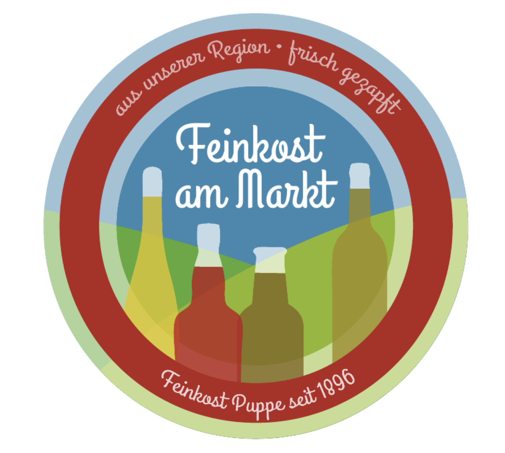
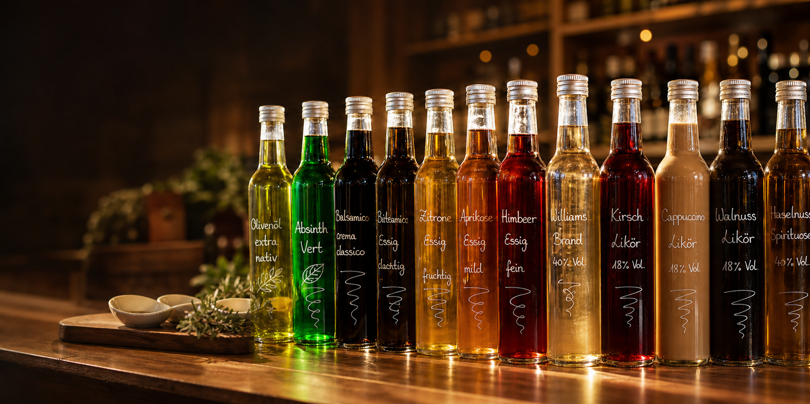
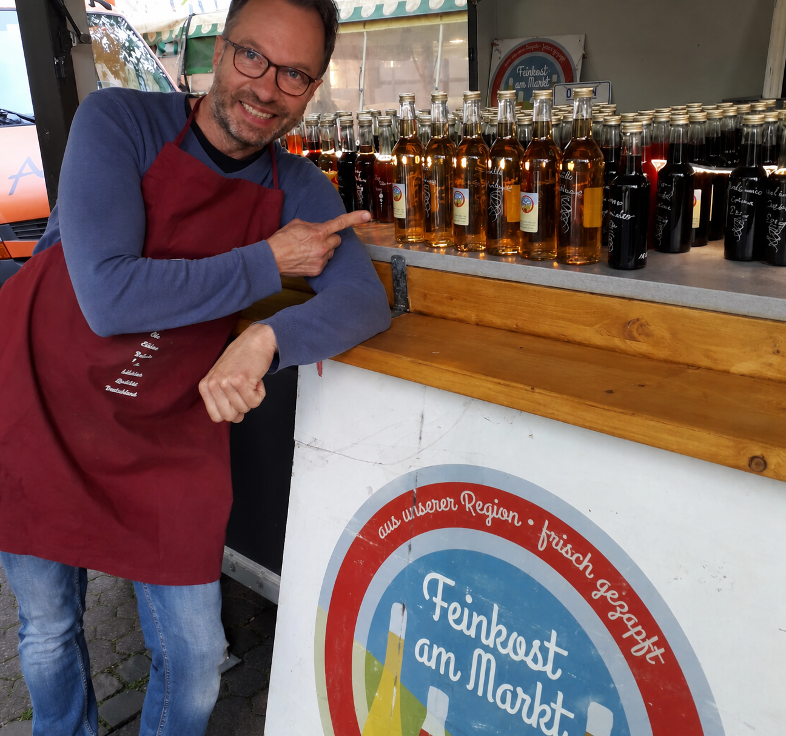

130 Jahre Tradition
Feinkost am Markt führt die Geschichte von Feinkost Richard Puppe weiter: mit Anspruch an Qualität und Geschmack.

Feinkost am Markt seit 1896
Schön, dass du da bist
Hochwertige Essige und Öle, Liköre und Brände in handbeschrifteten Feinkost-Flaschen.
Aktuelle Hinweise
Aktuell gibt es keine abweichenden Hinweise.
Warum Feinkost am Markt?
Feinkost am Markt führt die Geschichte von Feinkost Richard Puppe weiter: mit Anspruch an Qualität und Geschmack.
Am Marktstand bekommst du direkte Empfehlungen zu Essigen, Ölen, Likören und Bränden.
Qualität erkennt man am besten durch Riechen und Schmecken. Darum darfst du vor Ort kostenlos probieren.
Saubere Glasflaschen können wieder befüllt werden. Das spart Geld und vermeidet unnötige Verpackung.
Wochenmärkte + Laden
Feinkost am Markt findest du zwischen April und Ende Oktober im Kulturbahnhof Kassel sowie auf dem Wochenmarkt Marburg, dem Wehlheider Markt in Kassel und dem Wochenmarkt Baunatal.
Wieder ab 15. April 2026, Frankfurter Straße, bis Ende Oktober 2026.
8:00 bis 13:00 UhrDein „Feinkost am Markt"-Laden im Hauptbahnhof Kassel, vor Gleis 11, im ehemaligen Kunstausstellungsraum „Stellwerk".
12:00 bis 17:00 UhrWieder ab 17. April 2026, Wehlheider Markt, bis Ende Oktober 2026.
7:00 bis 13:00 UhrWieder ab 18. April 2026, Europaplatz, bis Ende Oktober 2026.
8:00 bis 13:00 UhrBestellung
Bestelle deine handbeschrifteten Feinkost-Flaschen telefonisch unter 0178 - 66 55 000 oder per E-Mail an joergpuppe@aol.com. Bestellungen sind wieder ab 12. April 2026 bis Ende Oktober möglich.
Ab 12. April 2026 versende ich ab mindestens 3 Flaschen à 0,25 Liter oder 3 Flaschen à 0,5 Liter.
Mindestbestellmenge ab der Laden-Eröffnung: mindestens 3 Flaschen à 250 ml.
Donnerstags ist im Laden Zeit zum Befüllen, Beschriften, Verpacken und Versenden.
Bestellungen sind ab 12. April 2026 bis Ende Oktober möglich.
Nachhaltigkeit
Gut für die Umwelt, gut für den Geldbeutel: 1,50 Euro Ersparnis pro Flasche. Nachhaltigkeit lebt vom Mitmachen, nicht allein vom Anbieten.
Bitte bring leere Glasflaschen, die du befüllen möchtest, gründlich gespült wieder mit zum Marktstand. Die leere Flasche muss nicht von mir sein, irgendeine saubere Glasflasche genügt.
Gespülte Flaschen müssen für die Befüllung mit Ölen richtig trocken sein. Bei Essigen, Likören und Bränden darf sich noch ein Tröpfchen frisches, sauberes Wasser in der Flasche befinden, da Essig und Alkohol konservieren.
Wenn das Etikett halb ab ist oder die Schrift nach dem Reinigen nicht mehr zu lesen ist, ist das nicht schlimm. Das machen wir neu.
Tradition verpflichtet
Begonnen hat bei mir alles in Bonn auf dem Wochenmarkt und Weihnachtsmarkt, das war im Jahr 2014. Aufgrund privater Veränderungen bin ich ab sofort im Raum Kassel, Marburg und Baunatal unterwegs mit meinen leckeren Essigen und Ölen, Bränden und Likören.
„Tradition, Tradition..." rief damals laut auf der Bühne Theater- und Filmschauspiel-Legende Shmuel Rodensky in der Hauptrolle des Milchmannes Tevje im Musical „Anatevka". Und ja, es stimmt: Tradition verpflichtet zu höchster Qualität. Seit 130 Jahren, von 1896 bis 2026.
Weihnachtsmärkte 2026
In 2026 werde ich wieder in Bonn auf dem Friedensplatz und in Köln am Alter Markt zusammen mit meinem Team täglich vertreten sein.
Auf dem Friedensplatz in Bonn-Zentrum, direkt neben dem Busbahnhof beziehungsweise gegenüber des Media Markt-/REWE-Eingangs.
Täglich 11:00 bis 21:00 Uhr Am Totensonntag, 22. November 2026, geschlossen.In 2026 bin ich auch wieder auf dem Weihnachtsmarkt in Köln am Alter Markt vertreten.
Meine Produkte
Das tatsächliche Sortiment ist größer. Diese Auswahl zeigt beispielhaft, was du bei Feinkost am Markt in Kassel entdecken, riechen und probieren kannst.
Alle Essige sind alkoholfrei mit 0,00 % Alkohol. Aperitif bedeutet nur: auch für Getränke geeignet.
Säure 3 %. Fruchtig, frisch und auch für Getränke geeignet.
Säure 3 %. Fein süß-säuerlich für Salate, Desserts und Obst.
Säure 3 %. Aromatisch, rund und beliebt zu frischen Salaten.
Säure 3 %. Beerig und weich, auch tröpfchenweise zu Süßspeisen.
Säure 3 %. Samtig, süßlich und wunderbar zu Käse oder Blattsalat.
Säure 3 %. Mild, dunkel-fruchtig und fein zum Abschmecken.
Säure 5,3 %. Intensiver Fruchtessig mit feiner Säure.
Säure 3 %. Leicht, fruchtig und alkoholfrei, auch für Aperitif-Ideen.
Säure 5,3 %. Kräftiger Himbeergeschmack für Salate und Soßen.
Säure 3 %. Frische Cassis-Orange-Note für Salate und Getränke.
Säure 3 %. Fruchtig und leicht, mit Apfel- und Orangenaroma.
Säure 3 %. Mild, rund und vielseitig in der Küche.
Säure 4 %. Tropisch-fruchtig zu Salaten, Gemüse und hellen Soßen.
Säure 3 %. Sonnig und fruchtig, auch über Desserts sehr fein.
Säure 3 %. Nussige Crema-Note für besondere Salate und Käse.
Säure 3 %. Klassisch, mild und cremig für die tägliche Küche.
Säure 3 %. Elegant, duftig und sehr schön zu Obst und Salat.
Säure 4 %. Herzhaft-fruchtig für Tomate, Mozzarella, Pasta und Soßen.
Säure 3 %. Birnig, mild und aromatisch im Abgang.
Wozu passen Essige?
Alle Essige passen zu Blattsalat, Feldsalat, Ruccola, Tomate-Mozzarella, Fisch, Käse und Geflügel.
Ein Schuss Fruchtessig verfeinert Gemüse-, Fleisch- und Pastapfannen, Erbsen-, Linsen- oder Gulaschsuppen.
Ein Butteröl aus Schweden, 100 % Rapsöl mit feinem Geschmack nach Butter, cholesterinfrei, rein pflanzlich und mit 9 % Omega-3-Fettsäuren. Kalt zu Salaten und bis 220 °C erhitzbar.
Ein Öl mit französischen Gewürzen und Knoblauch, mittelscharf mit Paprika und etwas Chili. Geeignet für Salate, Fleisch, Fisch, Gemüse, Pasta, Marinaden und Grillgerichte.
Fruchtiges Olivenöl aus Kreta mit leichter Schärfe im Abgang. Lecker zu Salaten, Fingerfood, Pasta und Baguette. Bitte nur leicht erhitzen oder dünsten.
Intensiv nussig durch geröstete Walnüsse. Verleiht Salaten, Speisen und Desserts einen besonders bekömmlichen Geschmack.
Tief dunkelgrün, dickflüssig und unglaublich nussig. Traumhaft über Kuchen, Eiscreme, Obst, Salate und als Dekoration auf dem Gourmet-Teller.
18 % Alc., fruchtig mit langem Abgang. Ein kleiner Schuss passt zu Prosecco, Sekt oder Weißwein.
18 % Alc., nicht so süß, mit Pfirsich und Maracuja auf Rumbasis.
18 % Alc., für Himbeer-Fans ein Muss.
18 % Alc., fruchtig und sehr beliebt.
18 % Alc., mit feiner Süße zu Beginn und erfrischender Säure im Abgang.
20 % Alc., Mandel- und Kirschlikör mit leichtem Marzipangeschmack.
18 % Alc., sahnig und nah an einem echten Cappuccino.
30 % Alc., intensiver Kaffeegeschmack für Kaffee, Kakao, Dessert oder pur.
18 % Alc., Karamell zum Träumen mit Meersalz als leichter Kontrast.
20 % Alc., Kirschbasis und geheime Kräuter.
37 % Alc., traditionelle Kasseler Delikatesse mit intensiver Kümmelwürznote und süßlichem Abgang.
40 % Alc., mild mit likörigem Abgang und leichter Süße.
40 % Alc., fruchtig, mild und klassisch mit geringer Süße.
40 % Alc., mild und fruchtig mit geringer Süße.
40 % Alc., mild mit likörigem Abgang und leichter Süße.
40 % Alc., fein nussig und klassisch mit geringer Süße.
40 % Alc., deutsch-schottische Cooperation mit leicht süßlich-würziger Note.
46 % Alc., 7 Jahre im Eichenfass gereift, fein, mild, edel und wenig torfig.
40 %, besonders fein und sehr beliebt.
Meine Empfehlung
Ich lade euch herzlich ein, alle Produkte kostenlos zu probieren. Mein Versprechen: Genießt die höchst mögliche Qualität Deutschlands von Essigen, Ölen, Likören und Bränden.
Kundenstimmen
Durchschnittliche Bewertung auf Google
FAQ
Kurz beantwortet: Märkte, Bestellung, Probieren, Lagerung, Haltbarkeit, Geschenke, Reservierung und größere Mengen.
Du findest Feinkost am Markt im Kulturbahnhof Kassel, vor Gleis 11, sowie saisonal auf Wochenmärkten in Kassel, Marburg und Baunatal. Die genauen Markttage stehen im Bereich Märkte.
Ja. Vor Ort am Marktstand und im Laden bist du herzlich eingeladen, Essige, Öle, Liköre und Brände kostenlos zu probieren.
Ja. Bestellungen und Fragen sind telefonisch unter 0178 - 66 55 000 oder per E-Mail an joergpuppe@aol.com möglich.
Am besten gut verschlossen, stehend, kühl und vor direkter Sonne geschützt lagern. Besonders Öle mögen einen dunklen, nicht zu warmen Platz.
Essige sind durch ihre Säure in der Regel lange haltbar. Entscheidend sind die Angaben auf der jeweiligen Flasche sowie eine saubere, gut verschlossene und lichtgeschützte Lagerung.
Ja, vor Ort kann nach Geschmack und Anlass beraten werden. Die konkrete Auswahl richtet sich nach dem aktuellen Sortiment.
Für bestimmte Sorten oder größere Mengen lohnt sich eine kurze Anfrage per Telefon oder E-Mail, weil die Verfügbarkeit je nach Markttag variieren kann.
Ja, größere Mengen können telefonisch oder per E-Mail angefragt werden. Am besten rechtzeitig melden, damit Verfügbarkeit und Abholung oder Versand geklärt werden können.
Liköre, Brände und Spirituosen enthalten Alkohol und sind nur für Erwachsene gedacht. Beim Probieren und Kaufen gilt entsprechend verantwortungsvoller Umgang.
Kontakt
Von Herzen, Jörg Puppe.
Für Bestellungen, Markttermine und Fragen zu Essigen, Ölen, Bränden
und Likören erreichst du mich direkt.
